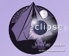

虽然没听说过DevOps, 但@pku侯明强 讲完后，听众的问题倒是最多的，涉及到的是开发，运维，测试的分工，卖liscense到SaaS模式转型，以及客户现场支持等方面。//@CTO俱乐部: 转发微博@Ada李力:CC视频CTO 侯明强 带来的DevOps主题，现场听众只有一人听说过。DevOps是一种是让开发和运维更好配合的方式，目的是为了更密切配合业务。
这周有两场CTO活动，北京和深圳。@CTO俱乐部:#CTO俱乐部#本周六深圳研发团队管理经验分享欢迎报名，3位在技术管理有所感悟的嘉宾将分享他们一路走来的经验和教训。广州中科院软件所常务副所长@袁-峰，深圳明源技术总监@阿朱，腾讯高级项目经理陈军@elginchen。主持人@ShiningXYY，@Ada李力 @孟迎霞 @CSDN付江 @CSDN研发频道 网页链接
回复@jackbillow:视频和PPT一直有，还有现场速记文字整理，与编辑报道。这种线下活动，更多强调交流，不在现场的话，仅靠记录，收获有限。 //@jackbillow:完了分享分享视频和PPT吧。 //@Ada李力:这周有两场CTO活动，北京和深圳。@CTO俱乐部:#CTO俱乐部#本周六深圳研发团队管理经验分享欢迎报名，3位在技术管理有所感悟的嘉宾将分享他们一路走来的经验和教训。广州中科院软件所常务副所长@袁-峰，深圳明源技术总监@阿朱，腾讯高级项目经理陈军@elginchen。主持人@ShiningXYY，@Ada李力 @孟迎霞 @CSDN付江 @CSDN研发频道 网页链接
帮转。进门规则有意思，注册的话，交一块钱；没注册，交十块钱；注册没来，交二十块钱。没来的话，二十块钱怎么收呢？[呵呵]@吾真本:哪位同学愿意在6月底去Eclipse社区分享有关Eclipse的相关经验（可以用中文分享）？这个社区的老外组织者Paul正在找讲师。网页链接 
回复@伍斌_Ben:这方法如果实行起来方便的话，我们以后的技术活动也可借鉴下。[做鬼脸] //@伍斌_Ben:老外就是有意思。我猜可能先统一注册交20元，来的退19元。 //@Ada李力:帮转。进门规则有意思，注册的话，交一块钱；没注册，交十块钱；注册没来，交二十块钱。没来的话，二十块钱怎么收呢？[呵呵]@吾真本:哪位同学愿意在6月底去Eclipse社区分享有关Eclipse的相关经验（可以用中文分享）？这个社区的老外组织者Paul正在找讲师。网页链接
回复@姜信宝Bob:网站 网页链接 //@姜信宝Bob:北京详情在哪儿 //@Ada李力:回复@jackbillow:视频和PPT一直有，还有现场速记文字整理，与编辑报道。这种线下活动，更多强调交流，不在现场的话，仅靠记录，收获有限。 //@jackbillow:完了分享分享视频和PPT吧。@CTO俱乐部:#CTO俱乐部#本周六深圳研发团队管理经验分享欢迎报名，3位在技术管理有所感悟的嘉宾将分享他们一路走来的经验和教训。广州中科院软件所常务副所长@袁-峰，深圳明源技术总监@阿朱，腾讯高级项目经理陈军@elginchen。主持人@ShiningXYY，@Ada李力 @孟迎霞 @CSDN付江 @CSDN研发频道 网页链接
@谢欣-酷讯旅游 @pku侯明强 和你都是同学？圈子真小。//@曾宪杰_华黎:哈哈，老同学啊。风采依旧。@Ada李力:CC视频CTO 侯明强 带来的DevOps主题，现场听众只有一人听说过。DevOps是一种是让开发和运维更好配合的方式，目的是为了更密切配合业务。